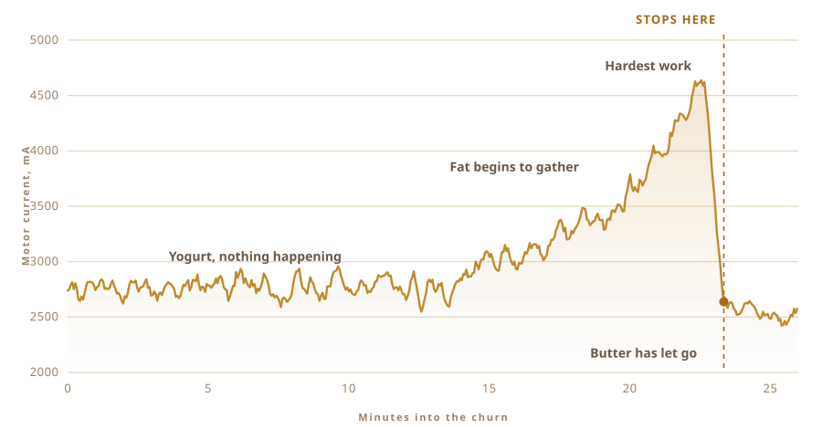

01
I had only ever eaten it
The ghee I know came from villages. Unlabelled jars, from people who have made it the same way for so long that nobody there thinks of it as a technique.
It does not taste like the tin from the shop. It is not close.
And I had never made a single batch. I did not know how long to leave the milk, or how cold the yogurt should be, or what the pot is supposed to sound like when it is ready. That is the honest starting position, and it is the entire reason any of this happened.
02
It starts with yogurt, not cream
Most ghee begins with cream. The traditional way begins a day earlier, with whole milk cultured into yogurt and left to sour overnight.
That souring is the entire point. Skip it and you get clarified butter, which is lovely, but it is not ghee.

03
The part you cannot rush
Warm milk, a spoonful of yesterday's yogurt stirred through, and then you leave it alone all night and let the bacteria get on with it.
That is fermentation, and it is the step the shelf version skips. Live cultures, mostly Lactobacillus, work their way through the lactose and turn it into lactic acid. The milk thickens. It sours. By morning it is not milk any more.
The people who sell cultured dairy will tell you this is where everything good comes from. Lactose broken down so it sits easier. Fats and proteins made more bioavailable. Butyric acid, the short chain fatty acid your gut lining actually runs on, and more of it in ghee made this way than in ghee whipped up from sweet cream. Ayurveda has been saying something close to this about bilona ghee for a very long time, well before anyone had the vocabulary for it.
I cannot test a word of that at a kitchen sink. What I can tell you is that the culture is what makes the smell, and the smell is not a small thing. It is most of what you are actually after.

04
The method has a name
Bilona. Yogurt into a pot, a wooden churn dropped in, then you work it back and forth until the butter gives up and rises.
I made the churn myself. The ones I could find online were glued, and none of them would tell me what the glue was. That thing sits in your food for half an hour, so I was not going to guess. Hardwood, stainless steel screws, bolted onto a stirrer shaft I already had in a drawer.
It takes about half an hour and nothing interesting happens for most of it. Which makes it exactly the sort of job you daydream about handing to something else.

05
So I asked
The people who actually know how to do this do not work from recipes, and none of them were in my kitchen. So the questions went into a chat window instead.
How long to culture. How cold to keep the yogurt. How fast you can spin it before friction warms the pot and ruins the butter. Every answer opened three more, and underneath all of them sat one I kept not asking.
Then I asked it. Could you just do it?
The question stopped being how do I make ghee. It became could you make it for me.
06
The Beast
A cordless drill. The churn from a drawer and a hardware shop. A plastic food box for the electronics, a chopping board for a spine, and a large yellow stop button, because anything with a motor should have one.
It cost almost nothing and it looks like it. That is sort of the point.

- MotorCordless drill, held in a clamp
- ChurnHardwood and stainless steel, made not bought
- BrainRaspberry Pi, logging once a second
- SenseMotor current and voltage, nothing else
- StopOne large button, wired to cut power
07
Spinning is the easy part
Anyone can spin yogurt. The difficult part is knowing when to stop.
Stop early and you have thick froth. Go too long and you beat the butter back into the buttermilk and lose it. There is a window, and it moves with the fat content, the temperature, and the day.
Nobody times this. You listen. The sloshing changes from a smooth swirl to an uneven slap, and that is your cue to reach in.

08
One sense, and only one
So I gave it one sense. It watches how hard the motor is pulling.
For the first quarter of an hour, nothing. Then the fat starts gathering and the drill has to push through something thicker. The current climbs, and it keeps climbing, right up until the butter lets go of the liquid. Then the load falls off a cliff.
That fall is the whole idea. No camera. No model. A number that goes up, and then drops.

09
It stopped on its own
It ran. I went and did something else. When I came back it had switched itself off.
Pale yellow curds sitting in cloudy buttermilk. Nobody told it the time. It worked out the moment from the only thing it could feel.

10
Then it is hands again
Gather the curds and press them into a ball. Rinse in cold water, over and over, until the water stops running cloudy.
Every drop of buttermilk you leave behind will burn in the next step. This part cannot be automated, and honestly I did not want it to be.


11
An hour of watching colour
Butter into a pot, low heat, and then you wait.
It melts. It foams white and loud. The water cooks off and the noise dies away. The milk solids sink and turn brown, and the smell shifts from butter to something toasted. When the pot goes quiet and the liquid runs clear, it is finished.


12
Ghee
Clear, amber, and it smells like the jars I grew up eating from. That was the only test I had, and it passed.
First batch I have ever made. I did not really make it.

13
What I want next
Right now the machine knows exactly one thing. Stop here.
Next I want it to run the whole loop on its own. Change the culture time. Change the speed. Taste what comes out, keep what worked, throw away what did not, and go again. Do that thirty times and it will land somewhere I would not have thought to look.
Which is fine by me. I never knew where to look in the first place.
That is the actual experiment. The ghee is just what came out of the pot.
What it is made of, where the sensing happens, and what the rig actually watches.